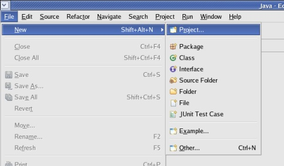
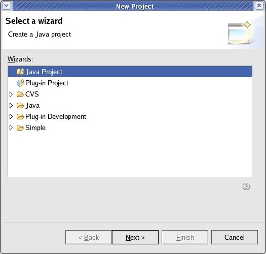
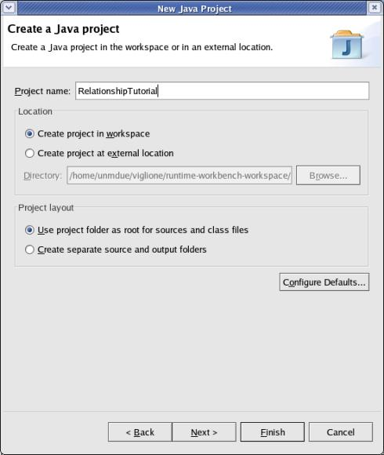
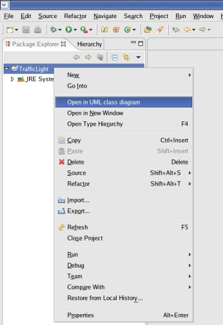
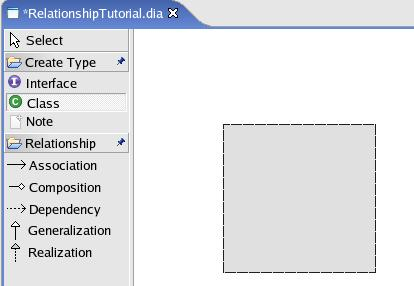
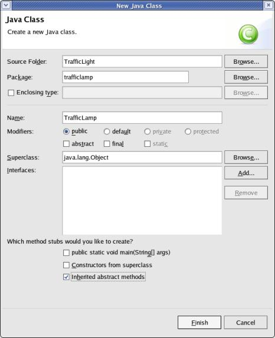
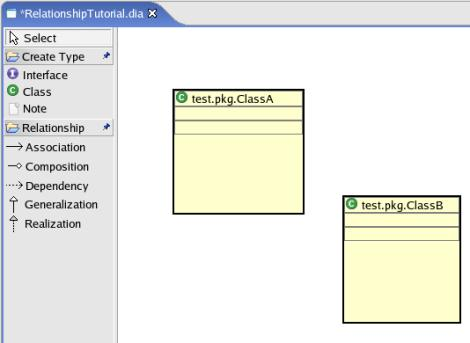

| Step 1 First, open eclipse and create an empty project. To create a new project click File->New->Project.... |
 |
| Step 2 Select Java Project and click "Next". |
 |
| Step 3 Give the project a simple name such as 'RelationshipTutorial'. You can safely click "Finish" now, so go ahead and do so. |
 |
| Step 4 Right-click the project and select "Open in UML class diagram". You can also open existing projects this way. |
 |
| Step 5 Now we have to create some classes. To create a class, select the class tool from the pallette on the left and draw a box. |
 |
When you let go of the mouse the Eclipse
New Java Class dialog will appear. Enter the package name "test.pkg", and
type name, "ClassA", then click "Finish".Now create a second class in the same package called "ClassB". |
 |
| Step 6
At this point we should have 2 UML Type boxes in our diagram. All we have to
do now is create a relationship between them. To create a relationship you must first select the tool for that relationship from the palette. Next, click the source type. Finally, click the target type. Try creating a "Composition" relationship from ClassA to ClassB |
 |